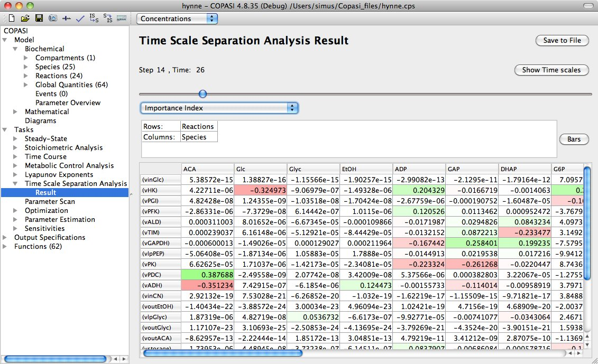
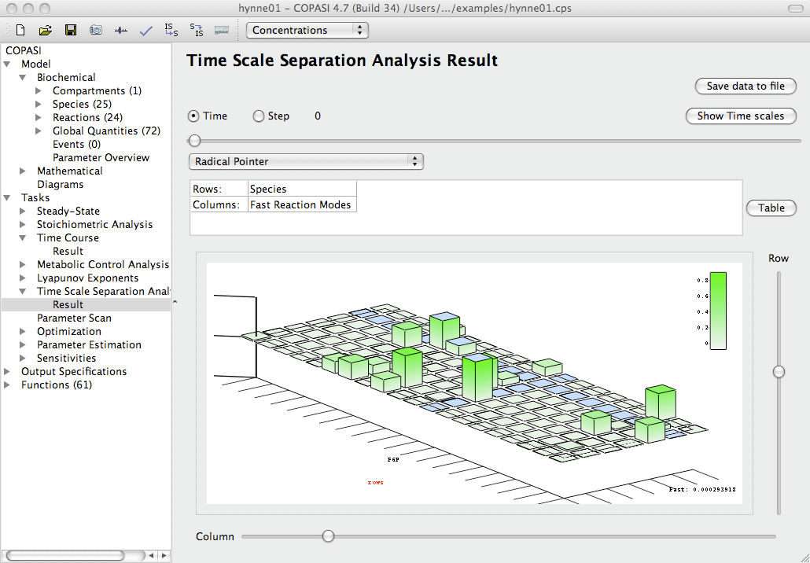
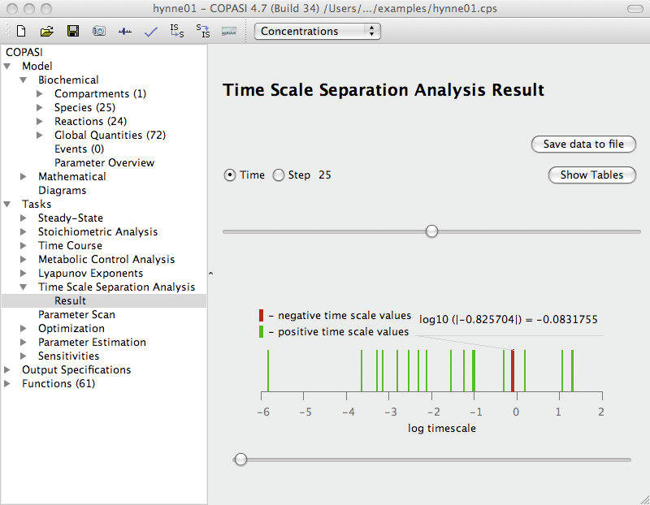

The dialog for the time scale separation analysis task can be activated by selecting the branch called
Time Scale Separation Analysis under the Multiple Tasks branch of the tree view on the left side of the user interface.
The three methods implemented in this task
- ILDM(LSODA, Deuflhard)
- Modified ILDM(LSODA)
- CSP(LSODA)
relies on the presence of a wide range of characteristic time-scales in biological systems and are based on the local analysis of the Jacobian of ODEs, which is partitioned into fast and slow components at the initial point of a user chosen interval. Depending on the method you have chosen, you can set several parameters in the Parameter value table that influence the way the method works. A detailed explanation of each method and those parameters will follow in the methods part of this document. Each of this methods provides local information at a certain time. To obtain global features of the system behavior the analysis must be performed at many points in the time interval of interest. For this purpose the options
Duration and either
Interval size or a number of
Intervals has to be set,
time course simulation. All the three methods involve numerical integration using the LSODA solver [
Petzold83].The Options for LSODA are set to the default values in this task,
deterministic simulation.
If you haven't
created a report definition yet, you can use the output assistant to easily create one by clicking on the corresponding button at the bottom of the TSSA task widget. You have to associate this report definition with a file for COPASI to be able to write the results to that file. To do that, you click on the
Report button.
Once you set the desired parameters, you can start the calculation by clicking on the
Run button. COPASI will show a progress bar while running the simulation, which might take some time depending on several factors, like the hardware you are using, the method you chose, and/or the size of your model. After COPASI finishes the calculation, the Result dialog is located directly below the Time Scale Separation Analysis branch in the object tree. Applying the time slider in the results widget you can obtain the results at different time points (time steps).
By default the results are displayed in the graphical user interface as tables. The positive numbers in the tables are colored by different shades of green, the negative numbers by the shades of red.
|  |
| An example of results table Importance Index in CSP(LSODA) method |
This makes it easy to immediately spot the most important contributions and analyze the distribution of the numbers. By clicking the button
Save to File you can save the tables to a text file.
By clicking the button
Bars you can visualize the results as three dimensional bar graphs employing the
qwtplot3D integrated in COPASI.
|  |
| An example of bar graph visualization of the Radical Pointer in CSP(LSODA) method |
The bar graphs can be turned and zoomed interactively. Furthermore single rows or columns of the tables can be highlighted.
An additional diagram (obtained by clicking the button
Show Time Scales) shows the distribution of the systems time scales at a chosen time point.
|  |
| An example of the time scale distribution graph |
The analysis of time scales evolution across the time can provide useful information about the system dynamics (
Approach: Model Analysis by means of Time Scale Separation). The fast dissipative time scales relate to the eigenvalues of the Jacobian with large negative real parts. The explosive modes are associated with positive eigenvalues. Equal time scales correspond to pairs of complex conjugate eigenvalues and indicate the presence of oscillating components in the system.